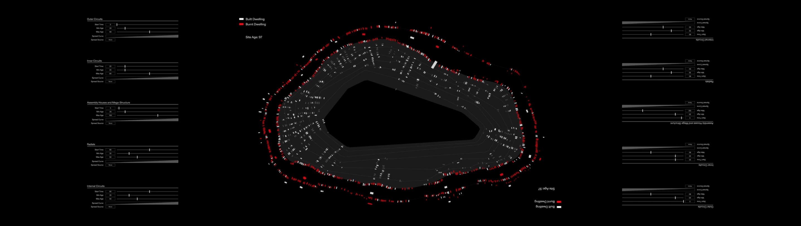
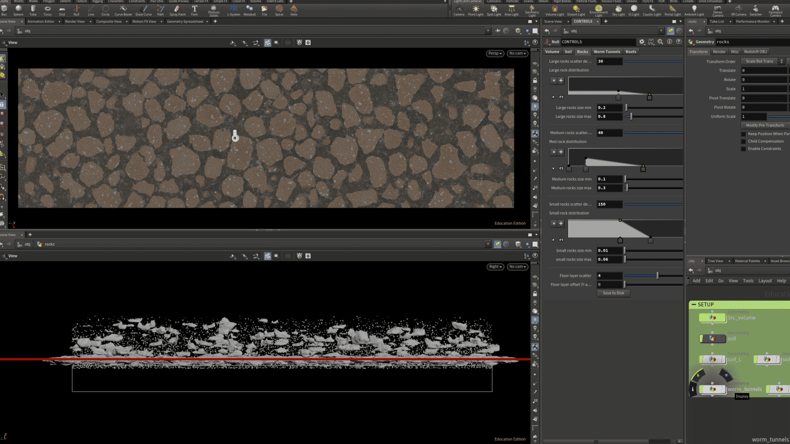
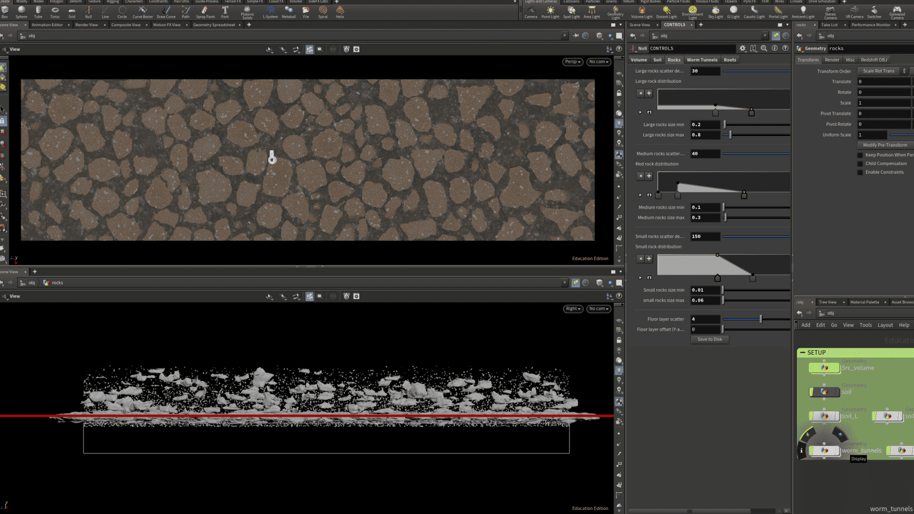

The resulting video as presented in the exhibition space.
An example of the settlement building tool, multiple parameters were added to produce a range of results consistent with archaeological findings.
The factors that effected the sim included using carbon dating information to determine timeframes; using kiln positions to determine starting areas of the settlement; the documented practice of burning buildings and how this could have affected nearby buildings (eg. buildings nearby are also burnt or are built as replacement); the influence of 'Assembly houses' and the geometric structure of the settlement (eg. building from the inside outwards or vice versa).
 

Model of the soil as going down in depth, the model includes tree roots, worms, rocks and different soil compositions.


Other models included the spread of chernozem over time and the growth of sunflowers over time on the site.
Full video and documentation at forensic-architecture.org/investigation/the-nebelivka-hypothesis